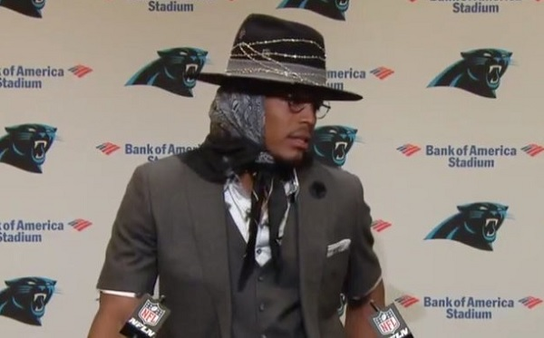
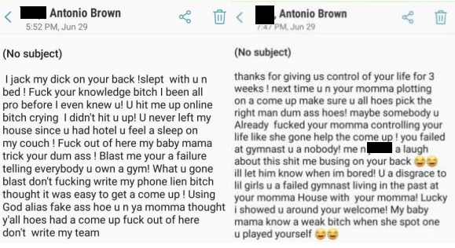
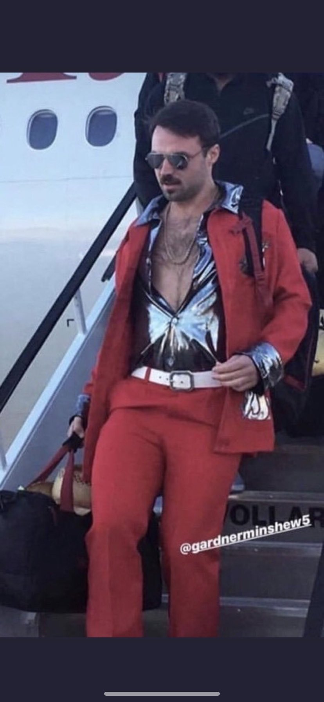

The Crackers squeaked out a win, mostly on the backs of Phillip Rivers and Marlon Mack. The Crusaders loss had to be extra frustrating for their usually amazing coach, who left a lot of points on the bench. If any one of Derrick Henry, DJ Moore, or Kyler Murray had been activated for gameday, the ‘saders would have won. Also, kicker Matt Bryant laid a goose egg because the Falcons attempted zero field goals or extra points, despite scoring two TDs. 1 extra point would have made the difference.
Barback may have wasted their highest score of the entire season against Uncle Bill’s offensive explosion. Christian McCaffrey and Sammy Watkins led the way with a combined 5 TDs and over 400 yards. As of this writing, McCaffery has already played his Week 2 game and has plummeted back to earth with a score of 6.3.
The monstars won easily, but the only skill player who exceeded his projection was QB Dak Prescott, currently interviewing for his next contract. However, the Cowboys will not play the New York Giants every week. The Street Fighters may need to look elsewhere at QB. Cam Newton blows. James Conner will likely bounce back, but the rest of the team may just not be very good.
The commissioner’s office has investigated allegations that the monSTARs bribed the commissioner with a washing machine. The commissioner found no impropriety by either party.
Waiver Wire had the third highest score of the 12 teams in the league and the second highest score amongst the 2 teams in his matchup. Le’Veon Bell appears to be back to where he left off before “winning” his fight against the Steelers.
[Le’Veon Bell Aside: The Steelers offer that Bell turned down would have paid him $45 million over the first three years (up to 70m over 5 years, but it’s possible he would have never gotten that.) Instead, Bell will get $28.5 million over the same 3 year period (including 0 for what would have been year 1). Bell can be cut after the 2020 season just as easily as he could have been on the Steelers offer, but if he is still really good, he will earn less from 2020 on than he would have with the Steelers.]
If the Vikings remain as committed to the run as they were on Sunday, Dalvin Cook will be a top player. By the way, if the Vikings remain as committed to the run as they were on Sunday, they will not beat other good teams often.
Farmer Fran had a great start to the season. Lamar Jackson won’t score 40+ every week, but maybe he can average in the high 20s, putting him in the same tier as Patrick Mahomes
The most important player for Hall’s team may be on Matt’s roster. If Melvin Gordon decides to come back tomorrow, Austin Ekeler could go from a top 5 RB to a top 30 RB. Last year, Ekeler showed flashes of greatness in limited carries, but the Charger’s coaching staff kept his carries limited. When Melvin Gordon was healthy for the entire game, Ekeler averaged only 6.36 carries, despite averaging 5.2 yards per attempt on the year.
The Hulkamaniacs defense played well. The only other player to exceed their expected points was Drew Brees, who did not look all that great until the end of the game when the Texan’s D decided they wanted to give the Saints a chance to win.
Tyreek Hill will miss significant time due to a sternoclavicular joint dislocation. Hill described the pain as similar to the pain his fists felt after beating his 3-year-old son. Antonio Brown appears set to play this week for the Delights, despite the civil case against him. Brown also appears to be mentally disabled, judging by the texts he sent to the alleged victim.
Baker Mayfield disappointed for Team America. It remains to be seen if Todd Gurley is going to be “the guy” in LA, which Team America is counting on.
The Dolphins are 19 point home underdogs against the Patriots this week. That is the 2nd largest point spread against a home team since 1977. The most was Atlanta (+23) vs the 49ers on October 11, 1987. The Falcons covered, losing 25-17.
This Sunday is the last time a team will play on a baseball field. This is the Raider’s last home game in Oakland during baseball season.
Gardner Minshew, the QB who replaced the injured Nick Foles, played very well, completing 22 of 25 attempts for 275 yards and 2 TDs (1 INT). The Jaguars were down a significant amount for most of the game, possibly inflating his stats. Minshew started his college football career at Northwest Mississippi Community College before transferring to East Carolina. After graduating from ECU, he transferred to Washington State as a graduate student for the fall of 2018.
After practice at Washington State, Minshew would stretch with exercise bands in the locker room wearing only a jock strap, sunglasses, and a headband. Occasionally he would do it naked.
After the news was reported that Foles would miss significant time, Minshew quoted Coach Boone (Denzel) from Remember the Titans : ““I don't scratch my head unless it itches and I don't dance unless I hear some music. I will not be intimidated. That's just the way it is. Let's go to work."
Minshew’s father took a shot at Team America when asked about his full name. “In Mississippi, if you’re ‘junior,’ you’re probably going to get called ‘Bubba.’ That’s why it’s Gardner Flint Minshew II instead of Gardner Flint Minshew Jr.,” his father explained. “Nothing against all the Bubbas out there. It just wasn’t what my wife wanted.”
The Jaguars take on the Texans today in Houston.